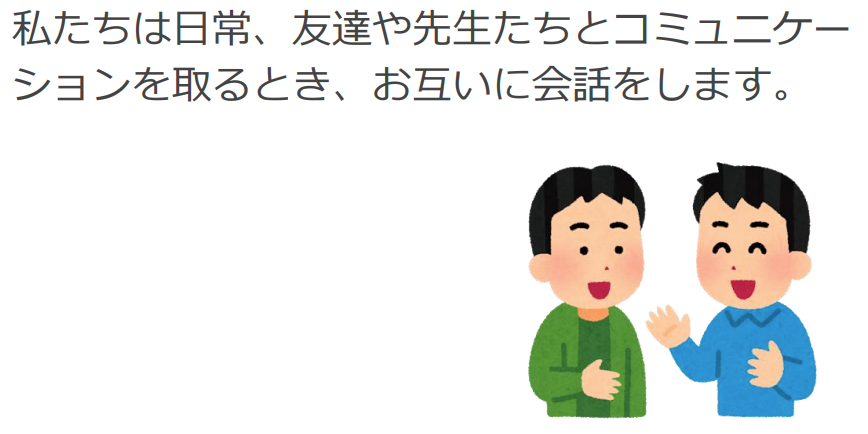
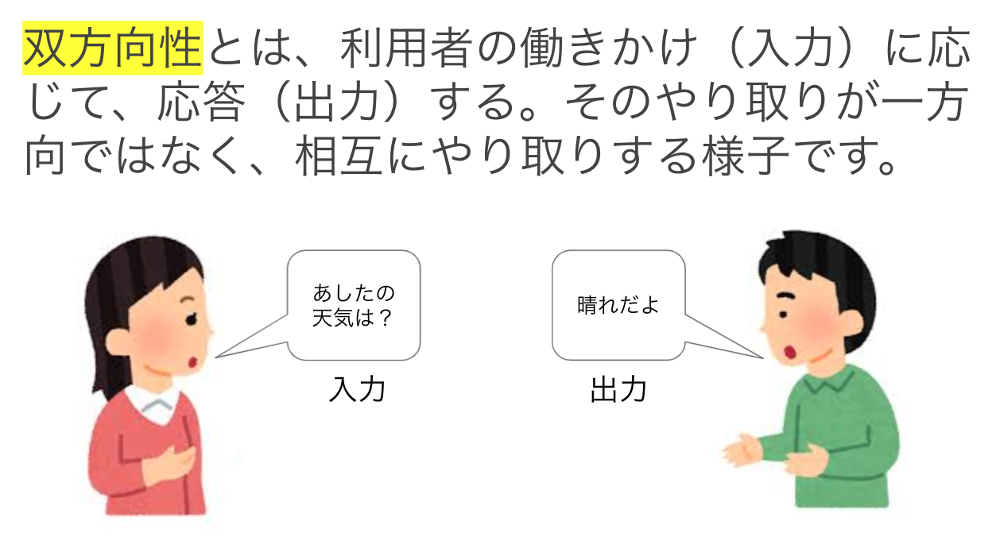
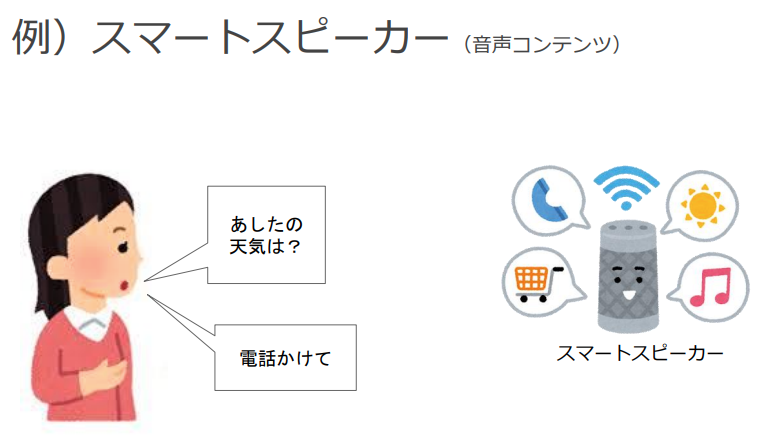
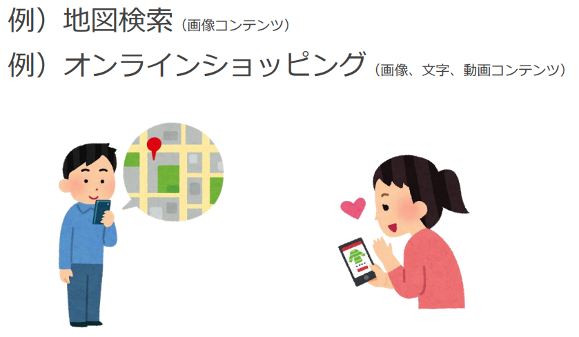
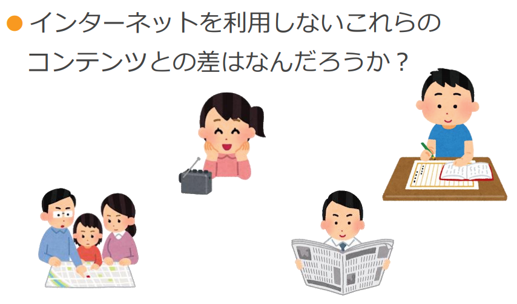
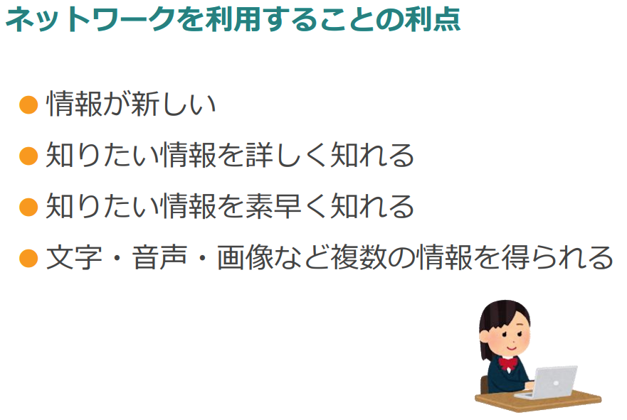
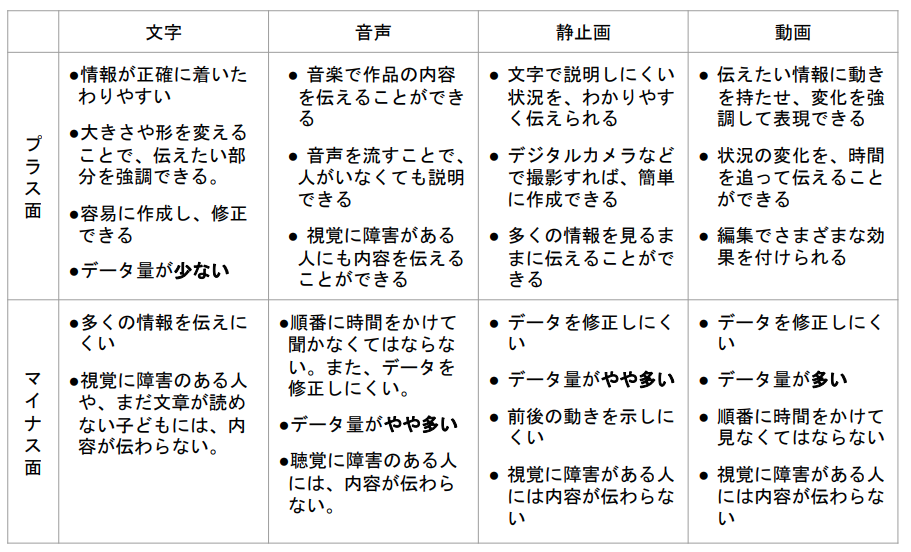
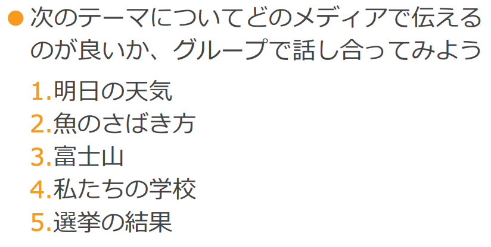

スライド | 指導者 |
 | まず、双方性のあるコミュニケーションを考えてみましょう。 |
 | 友達が明日の天気を訪ねれば、「晴れだよ」って答えますよね？ 問いかけの「明日の天気は？」は入力、「晴れだよ」は出力にあたります。 双方向性とはこのやり取りが一方向ではなく、入れ替わりながら相互にやり取りする様子のことを言います。 |
 | 次はコンテンツについてです。 人間同士だと、質問に答えたり、「ハサミ取って」とお願いすれば、取ってくれますよね？ 同じようにスマートスピーカーを見てみると、天気を聞けば音声で知らせてくれるし、Amazonなどで買い物をお願いすることもできますね。 |
 | 他にも、学校や駅の場所を訪ねれば地図で教えてくれます。 この場合は音声やキーボードで地名を入力し、地図で出力されます。 右の女の子は、どうでしょう？ 同じように欲しい商品を音声やキーボードで入力して、商品の画像が出力されています。このようにサービスとして出力されたものをコンテンツと言います。 それでは、ワークシートにいろいろなホームページやサービスなどで入力に対してどのような出力を返しているか調べて記入しよう。 |
さっき紹介したコンテンツはみなインターネットを利用しています。
スライド | 指導者 |
 | これらのコンテンツはインターネットを利用していますか？→使っていない では、インターネットを使わずにこれらの情報を調べるとどうなるでしょうか？ 例）住所、天気、列車の時刻etc... どんなところに違いや大変さがあるかな？→ワークシートに記入してみよう これらを踏まえて、ネットワークを利用して情報を調べることの利点は何だろう？ →ワークシートに記入してみよう |
 | いろいろな考えが出たと思いますが、どうでしょうか？ 新聞やラジオ、地図を使えば必要な情報は得ることができます。一方で新しい道路ができた場合を考えてみてください。古い地図だとその道は載っていませんよね？同じように新しいお店が開店したらどうなりますか？ また、インターネットの技術を利用すれば地図だけでなく、定休日や開店時間、電話番号などいろいろな情報をまとめて得ることもできます。 |
 | 世の中にはいろいろなコンテンツが存在します。（ラジオ番組とかTV番組、SNS、新聞、ゲームなど....） コンテンツを作るのにさまざまなメディアを用います。 それぞれのメディアには長所と短所があります。簡単にまとめてみましょう。 →ワークシートに記入しよう |
 | いろいろなメディアの長所短所がわかったと思います。 今度は、グループで考えます。 ここに挙げた5つのうち1つを選び、協力して多くの人に伝えるとしましょう。 その時、どのメディアを使うのか？またそのメディアを使う理由をしっかりと書いてください。 →クラスメイトと話し合ってワークシートに記入してみよう |
それでは班ごとに順番に発表しましょう。 ※時間がない場合はこのグループ活動＆発表を省略しても可 |
双方向性って何ですか？
コンテンツって何ですか？
メディアって長所/短所ありましたね？
動画の短所ってどんなことですか？
動画のYoutubeが万能というわけではなく、音声のラジオや本の朗読サービスのようなものもある。なぜだろうか？
音声だけでコミュニケーションを取りたい、情報を得たいこともある（移動中の車内や運動中などに...）→使い方や用途によって使い分けることが大切。